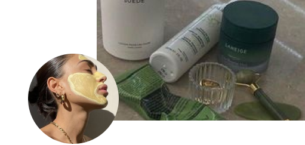

1.Logo após acordar, comece o dia lavando seu rosto,
para que retire toda a oleosidade que está presente;
2. Aplique o protetor hidratante, caso quiser
aplique o bobyclin ( protetor com cor);
3. Aplique o hidratante labial.
.Noite
1.remova a maquiagem com água micelar;
2. lave o rosto com o sabonete líquido específico;
3. passe hidratante facil;
4. aplique o sérum noturno;
5. passe hidratante labial.

Máscara facial
Para ter uma pele luminosa e saudável é necessário de hidratação!
Para isso é preciso adaptar em sua rotina máscaras faciais.
Beber água e ter uma dieta equilibrada
A alimentação é um item muito importante para nosso corpo e pele. Arrisque em se alimentar-se com
alimentos
com antioxidantes, ajudam na estimulação e renovação da pele.
Cuide da sua saúde mental
A sua saúde mental e emocional são os pilares para as mudanças!
Busque equilíbrio entre sua vida pessoa e profissional.